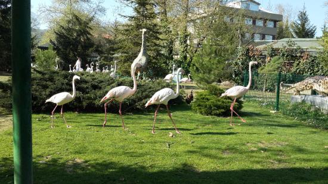
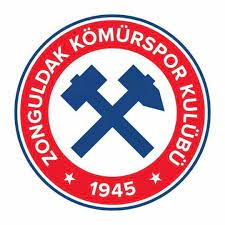
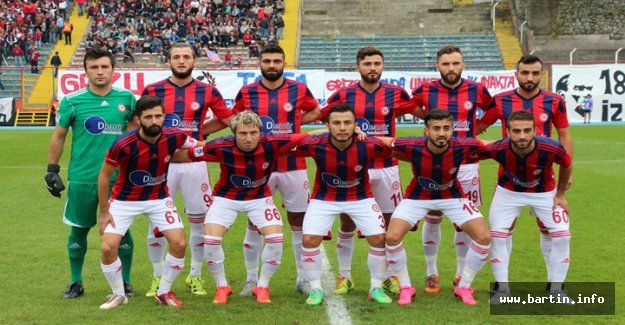

Tarihçe
Turistlik mekanlar
Zonguldak Kömürspor
Anasayfa
Frigler Dönemi MÖ 1200 yılında ağırlığını Frig oymaklarının oluşturduğu Ege göç kavimleri, Trakya üzerinden İç Anadolu’ya yayıldılar. Bu kavimlerden bitin, Mariandin ve migdanlar Zonguldak yöresine yerleşerek bölgenin bilinen ilk halkını oluşturdular. Gerek Frigler, gerekse öbür oymaklar, birkaç yüzyıl boyunca siyasal bir örgüt yapısı oluşturamadılar. Bununla beraber Zonguldak’ın güneyine düşen yörelerde maden işletmeciliği ve el sanatlarında önemli bir gelişme elde ettiler. Daha sonraları Kafkaslardan kalkıp, Anadolu’ya giren Kimmer beyleri Frigya’ya ardı ardına seferler düzenleyerek, Frig Kralı’nı MÖ 676’da ortadan kaldırdılar. Kimmerler daha sonraları Lidyalılar, Asurlularla yaptıkları savaşlar sonucunda zayıf düştüler. İran’dan gelen Med devleti ile yaptıkları savaşlar sonucu tutunamayarak Anadolu’yu terk ettiler. Kolonileştirme Dönemi Kimmerlerin yöreyi terk etmesinden sonra Lidya Devleti kuzeye doğru genişleyerek, M.Ö. VI.yüzyılda Zonguldak yörelerinde bölgesel bir üstünlük sağladı. Yine aynı yıllarda, Batı Anadolu kıyılarında yaşayan Megaralılar ve Boitayalılar Zonguldak yörelerine geldiler. Karadeniz kıyılarından getirdikleri malları boşaltabilecekleri küçük ticari iskeleler kurmaya yöneldiler. Bunlar arasında Filyos, Amasra, Ereğli gibi koloniler vardı. Persler, Zonguldak’taki Lidya egemenliğine MÖ 546’da son verdiler. Persler Dönemi 213 yıl boyunca Persler Anadolu’nun tümüne egemen olmalarına rağmen koloni kentlerin yönetimine fazla karışmadılar. Ancak bu kentlerin yönetimine “Tiran” adı verilen kendi yandaşlarını getirmeye çalıştılar. Ancak MÖ 334’te Anadolu’ya geçen Makedonya Kralı İskender, Bronikos (Biga) çayı yakınlarında Pers ordusunu yenince, Pers üstünlüğü de bu yörede sona erdi. İskender ve Bitinya Krallığı İskender, bölgeyi Makedonyalı subayların yönetimine bıraktı. İskender’in subaylarından Kalas, yörede bir baskı oluşturmaya çalıştı. Fakat Bitinyalı önder Bas’un direnişi karşısında yenildi. M.Ö. 326’da Romalılar, M.Ö. 85’de Bitinya ‘ya girerek İzmit’i yağmaladılar. Bitinya Kralı, Roma hegemonyasını tanımak zorunda kaldı. M.Ö. 70 yılında ise Romalılar, Ereğli’den Samsun’a kadar Karadeniz kıyılarını ele geçirdi. Dolayısıyla Zonguldak bölgesi, Roma’nın Ön Asya vilayeti oldu. Romalılar Dönemi İ.Ö. 70’te Romalılar Herakleia ve çevresini ele geçirdiler. Herakleia yağmalandı. Kentin agorasındaki altın Herakles heykeli Roma’ya götürüldü. Roma Döneminde yazan coğrafyacı Strabon Herakleia’danı iyi limanları olan bir kent olarak söz eder. bir yarımada kıstağındaki Amastris’in iki yanında limanlar vardır. En iyi şimşir ağacı türü en çok Amastris toprağında, özellikle Kytaron dolaylarında yetişir. Romalılar kıyı kentlerini birer liman ve savunma noktaları oldukları için onardılar, Herakleia, Teion, Amastris, ikincil yollarla Nikomedia (İzmit) – Amasia (Amasya) anayoluna bağlandı. Bu kentler, kimi kalıntıları günümüze ulaşan tapınak, tiyatro, su kemeri, antrepa, bazilika, çeşme, vb. yapılarla genişletildi. Hıristiyanlık öncesinde yörede başta Zeus Strategos olmak üzere birçok tanrı ve tanrıçaya tapılmaktaydı. Deniz tanrısı Poseidon da büyük baygı görmekteydi. Amastris’te Poseidon’a adanmış bir tapınak vardı. Herakleia ve Amastris sikkelerinde Poseidon betimleri görülür. Amastris’te Mısır Tanrıları Pis, Seragis, Apis’in tapınakları ve sunakları vardı. Ayrıca, Amastris’te Mısır kökenli kutsal lotus fidanı bulunuyordu. Hıristiyan söylencesine göre, Karadeniz kıyılarında Hıristiyanlığı Havari Anderas yaymıştır. Hıristiyanların baskı altında tutulduğu dönemde Herakleia’da Ayazma Deresi Vadisi’ndeki mağaralar kilise olarak kullanılmıştır. Kâhinler Mağarası adıyla bilinen en büyük mağarada Hıristiyanlıkla ilgili frenk izleri, gömütler bulunmaktadır. Söylenceye göre, Amastris’teki lafusu balta ile parçaladığı için putperestlerce öldürülen Hyakinthas, sonraları kentin yerel azizi sayılmıştır. Bizans Dönemi 395’te ikiye ayrılan Roma’nın doğu kısmında kalan bölge (Bizans), VII.yüzyılda Opsikian Theması sınırları içinde yer aldı. Bizans Döneminde Herakleia, Teian, Amastris, İmparatorluğun doğudaki merkezi Trapezus yolu üstünde önemli uğraklardı. Başlangıçta birer metropolitlik olan Herakleia ve Amastris, İmparator Justinianas döneminde piskoposluk düzeyine indirildi. Bu kentler, bir iç deniz olan Karadeniz kıyısında bulunmaları ve art bölgelerinin sınırlılığı yüzünden eski görkemlerini günden güne yitirdiler. VIII.yüzyıl sonlarında Müslüman Arapların bir akını çevreyi sarstı. IX.yüzyıl ortalarında Rus korsanlar kıyı kentlerini yağmalamaya başladılar. Bu akınlardan birinde Amastris tümüyle yakılıp yıkıldı. Bu yıkımdan sonra surların dışındaki asıl kent terk edildi. Türklerin Anadolu’da yayılmaya başladığı dönemde, Zonguldak çevresinin eski kentleri küçük birer kasaba-kale görünümündeydi. XIII.yüzyıl sonlarında Cenevizliler Herakleia ve Amastris’e yerleşerek ticaret merkezleri kurdular, bir süre sonra da bu kentlerin yönetimini ele geçirdiler. Timur’a giderken Amastris’e uğrayan İspanyol elçisi Clavija, kale dışındaki asıl kentin bir yıkıntılık olduğunu yazmaktadır. Bu, Cenevizlilerin yalnızca limandan yararlandıklarını göstermektedir. Kalede, Cenevizlilerin onarımlarını belirten Ceneviz devletinin yada tanınmış ailelerin armaları, kazınmış taşlar bulunmaktadır. Anadolu Selçuklu Dönemi XI.yüzyıl sonunda Anadolu’nun geleceğine Türkler hakim olmaya başlarken, Zonguldak havalisindeki eski şehirler küçük birer kale-kasaba görünümünde bulunuyorlardı. Bu yıllarda Bizans idaresinin zayıflaması bu bölgede güvenlikten eser bırakmamıştır. Bizans’ın resmi memurları olan Dukkas’lar, halkı haraca bağladıkları ve limanlara uğrayan yelkenlileri soydukları için iskeleler deniz ticaretindeki önemlerini yitirmiş durumdaydılar. Kıyı içi bölge ticaretinde karakol görevi yapan kale ve şatolar, çetelerin ellerine geçmiştir. Bu kargaşa yıllarında Zonguldak havalisinde gözüken ilk Türk Komutanı Emir Karatekin oldu. Bu cesur Türk komutanı, 1084’te Ulus, Bartın, Devrek topraklarını ele geçirdi. Daha sonra kıyıya yönelen Emir Karatekin Zonguldak yöresini bütünüyle zaptetti. 1085’te de Sinop’u aldı. Ancak, yörenin Türklerin elinde kalması uzun sürmedi. Büyük Selçuklular ile Anadolu Selçukluları arasındaki çekişme sebebiyle 1086’da tekrar Zonguldak ve havalisi Bizanslıların eline geçti. 1092 sonlarında I.Kılıç Arslan’ın başa geçmesiyle toparlanan Anadolu Selçuklularını, Haçlı Seferleri ve 1107’de I.Kılıçarslan’ın ölümüyle çıkan taht kavgaları güçsüz bırakmıştır. Dolayısıyla Anadolu Selçukluları Zonguldak yöresinden uzak kalmışlardır. Onların bu durumundan faydalanan Danişmendliler, Karadeniz kıyılarını zaptederek Ereğli’ye kadar ilerlemelerine rağmen yörenin tümünü elde edememiştir. II.Kılıç Arslan’ın 1155’te tahta geçmesiyle yeniden güçlenen Anadolu Selçukluları, 1176’da Bizans ordusunu ağır bir yenilgiye uğratıp, 1178’de Danişmendliler devletini ortadan kaldırdılar. Ancak bu başarılarına rağmen Zonguldak ve havalisini ellerine geçiremediler. Zira, II.kılıç Arslan’ın ölümü sonrasında çıkan taht kavgaları Selçukluların Bizans topraklarına seferler yapmalarını engelledi. IV.Haçlı Seferi esnasında Latinler, 1204’te Konstantinapolis’i ele geçirerek bir Latin imparatorluğu kurdular. Bu yüzden Haçlılardan kaçan Bizanslılar, Trabzon-Rum ve İznik-Bizans imparatorluklarını meydana getirdiler. Kısa zaman içinde sınırlarını genişleten Trabzon Rumları, İznik Bizanslılarına yenilince Zonguldak yöresi İznik Bizans İmparatorluğuna bağlandı. 1261’de Latinlerin Avrupa içlerine doğru dönmeleri üzerine, yeniden Konstantinapolis’e dönen Bizanslılar, ülke birliğini sağladılar. Bizanslılarda kendileriyle iyi ilişkiler içerisinde bulunan Ceneviz’e Zonguldak yöresindeki iskelelerden ticari amaçla yararlanma hakkı tanıdı. XIII.yüzyıl sonlarında, iç kısımların Türkler tarafından, kıyıların ise Cenovalı gemicilerce kontrole alınması üzerine yöre topraklarında Bizans hakimiyeti son buldu. Eflani, Devrek, Bartın, Safranbolu, Ulus ve şimdiki Karabük toprakları, 1335’te bağımsızlığını elde eden Candaroğulları Beyliği’nin sınırları içine girdi. Osmanlı Dönemi Padişah I.Murat’ın bölge topraklarını Osmanlı sınırlarına katmak istemesine halk karşı çıkar ve Candaroğulları Beyliği yanında yer alır. Osmanlılarda 1380 yılında Cenevizliler anlaşarak Karadeniz Ereğli’yi satın alır. 1392’de yıldırım Beyazıt, Zonguldak bölgesini Osmanlı topraklarına katar, ama 1402 Ankara Savaşında Timur’a yenilince alınan topraklar tekrar Candaroğulları Beyliği’nde kalır. Padişah Celebi Mehmet, ülke bütünlüğünü sağlama politikaları çerçevesinde Zonguldak’ın güney kesimini 1417’de Osmanlılara katarken, kıyı şeridindeki iskelelerde ticari yaşam yine Cenevizlilerin elindedir. 1460 yılında Fatih Sultan Mehmet Amasra’yı alır. Candaroğulları Beyliği’ne son verir ve yöredeki Hıristiyan bezirganlarda İstanbul’a yerleşmek zorunda kalır. Osmanlı Devleti’nin ilgisini çekmeyen Zonguldak ve yöresi önce 1654 yılında Kazak korsanlarca, sonra da korsanlara karşı halkı korumak amacıyla gelen yeniçerilerce yağmalanır. Ekonomik ve ticari önemini yitiren bölgeye devlet sahip çıkmayınca eşkıyalar ve ayanların baskısı halkı göçe zorlar. Taşkömürünün 1829’da bulunmasıyla tekrar önem kazanan bölge 1882 yılından sonra yabancı sermayenin ilgi merkezi olur. Taşkömürü havzasındaki üretim ocakları İngiliz, Fransız, Alman, Belçika, rus, Yunan ve yerli şirketlerce çalıştırılır. Yöredeki şirketlerinin haklarını korumak, kömür üretimini artırmak bahanesiyle Fransız askerler 08.03.1919’da Zonguldak’ı 08.06.1919’da da Kdz. Ereğli’yi işgal eder. Var olan Müdafa-i Hukuk Cemiyetlerinin oluşturduğu milis güçleriyle Fransızlar 18.06.1920’de Ereğli’den, 21.06.1920’de de Zonguldak’tan çekilmek zorunda kalır. CUMHURİYET DÖNEMİ 14 Mayıs 1920’de müstakil mutasarrıflık olan Zonguldak merkez, Bartın, Hamidiye (Devrek), Ereğli kazalarından oluşmuştur. Kuruluşları, Cumhuriyetin ilanından (29 Ekim 1923) sonra olan, illerin ilki Zonguldak’tır. 1 Nisan 1924’te teşkil edilen Zonguldak Vilayetine, 1927’de Safranbolu kazası da bağlandı. Sonraki yıllarda ilin bazı kasabaları da birer ilçe merkezi olarak teşkilatlandırıldı. Çaycuma, Devrek’in bir nahiyesi iken, 1944 yılında ilçe oldu. Yine aynı yıl uzun yıllar Safranbolu’nun bir bucak merkezi olan Ulus’da Zonguldak’ın yedinci ilçesi olarak kuruldu. Daha sonra sırasıyla, 1953’te Karabük ve Eflani, 1957’de Kurucaşile ilçe merkezi oldular. Temmuz 1987’de Alaplı, Amasra ve Yenice kasabaları, Mayıs 1990’da da Gökçebey kasabasının kaza haline getirilmesiyle Zonguldak’ın ilçe sayısı on üçe yükselmiştir. Ancak 28.08.1991 gün ve 3760 sayılı (Bartın ilinin kuruması hakkında) kanunla Bartın’ın il olması sonucu Bartın’ın yanı sıra Amasra, Ulus, Kurucaşile; 6.6.1995 gün ve 550 sayılı (Karabük ilinin kurulması hakkında) kanunla da Karabük’ün yanı sıra, Eflâni Safranbolu ve Yenice ilçelerinin ayrılmasıyla ilçe sayısı beşe düşmüştür.
Zonguldak - Gökgöl Mağarası Zonguldak'a 3 km uzaklıkta, Zonguldak-Ankara yolu üzerindedir. Kollan ile uzunluğu 3350 m'dir. Girişten 250 m'ye kadar olan fosil kısımdan sonrası aktif mağaradır. Girişten başlayarak mağara bitiminde çıkan kaynağa kadar, mağara hemen hemen aynı seviyede ve yatay yönde devam eder. Mağara 3 bölümden oluşur: 1. Fosil kısım, 2. Aktif kısım, 3. Yarı aktif yan kolları. 250 m devam eden fosil kısımdan sonra, yeraltı suyunun yeni bir yatağa geçerek burayı terk ettiği görülür. Burada boyları 2-5 m arasında değişen sarkıt ve dikitlere rastlanır. Çöküntü blokları arasından 1. salona çıkılır. Çöküntülerin dibinde sifona geçilir (7-10 m uzunluğunda). Buradan sonrası aktif haldedir. Yeraltı deresinin geldiği yöne gidilirse, 30-40 m yüksekliğinde 2. salona ulaşılır. Gökgöl Mağarası,Zonguldak'a yakın olması, ulaşım için pek çok araç bulunabilmesi yanında, yer yer çok güzel sarkıt, dikitler ve travertenler içermesi ve gezilmesinin oldukça kolay olmasıyla turistik açıdan önemlidir. Gökgöl Mağarası'nın 875 metrelik kısmı b turizme açılmış durumdadır. Mağara Adı : Gökgöl Mağarası Uzunluğu : 3350 m Derinliği : -11 m Eğimi : 82 m Mağarayı Bulanın Adı : Temuçen Aygen, Chris Mauer, Harvery Lomas Bulunduğu Yıl : 1976 Çanakçılar Hayvanat Bahçesi ve Botanik Alanı Zonguldak Gökçebey’deki Çanakcılar Tesislerindeki 140.000 m2‘lik açık işletme alanının 30 dönümlük bölümünde yer alan Hayvanat Bahçesi ve Botanik Bahçesinde 75 farklı türden 850 hayvan ve onlarca çeşit bitki yaşamaktadır. Büyükten küçüğe tüm doğa severlere açık olan bu alanda ziyaretçiler gönüllerince; hayvanların ve doğanın güzelliğini bire bir yaşama olanağı bulmaktadır.

Tarihçece 1986 yılında Demir Madencilik Dilaverspor adıyla kurulan takım 2011 yılında Zonguldakspor'un ekonomik nedenlerle Amatör Lige düşüp Fenerspor adını almasından sonra Zonguldak ilinin 1 numaralı takımı olmuş ve yükselişe geçmiştir. 2010-11 sezonunda Zonguldak Süper Amatör Ligde ikinci olarak BAL'a yükselebilmek için Zonguldakspor ile baraj maçı oynadı maçı 4-2 kazanarak BAL'a yükseldi. Dilaverspor ertesi sezon isim değişikliğine giderek Zonguldak Kömürspor adını aldı.[2][3] 2013-14 sezonunda Bölgesel Amatör Lig 10.Grup'ta sezonu şampiyon olarak bitirdi ve 3. Lig'e terfi maçında Zara Belediyespor'u 2-0 mağlup ederek 3. Lig'e yükseldi.[4] 2014-15 sezonu sonunda Play-off mücadelesi veren Zonguldak Kömürspor İstanbulspor'a elenince, 2015-2016 yıllarında da üçüncü ligde mücadele etmek zorunda kaldı. 2015-16 sezonunda ise ligi 4. sırada bitirerek tekrar Play-Off şansı yakaladı. İlk maçlarda İzmir ekibi Tire 1922spor'u eleyen Zonguldak Kömürspor, final maçını Çanakkale'de Denizli ekibi Kızılcabölükspor ile oynadı ve maçtan 2-1 galip ayrılarak şampiyon oldu ve 2. Lig'e yükseldi.[5] Başarılar Futbol A Takımı 3. Lig Play Off Şampiyonluk (1) : 2015-16 Play Off Yarı final (1): 2014-15 Bölgesel Amatör Lig Şampiyonluk (1) : 2013-14 Zonguldak Süper Amatör Lig İkincilik (2): 2007-08, 2010-11 U19 U19 Türkiye Şampiyonası 1. Kademe Şampiyonluk (1): 2012 U17 Zonguldak U17 Ligi Şampiyonluk (1): 2012 U14 Zonguldak U14 Ligi Şampiyonluk (1): 2019 U13 Zonguldak U13 Ligi Şampiyonluk (1): 2016
 